O mito de que pessoas superdotadas não precisam de apoio
Muitas vezes, a capacidade intelectual acima da média esconde o desenvolvimento assincrônico e uma dor existencial silenciosa. É essencial validar a intensidade com que o mundo é sentido.

Venha fazer parte da nossa comunidade!
Ao cadastrar você concorda com nossos
Termos e CondiçõesAqui, sua intensidade intelectual e sensibilidade emocional são reconhecidas e acolhidas.
Muitas vezes, a capacidade intelectual acima da média esconde o desenvolvimento assincrônico e uma dor existencial silenciosa. É essencial validar a intensidade com que o mundo é sentido.
Descobrir que a baixa dopamina gerada por tarefas puramente burocráticas causa exaustão real foi o maior alívio da minha vida. Você não é preguiçoso; seu cérebro precisa de profundidade e sentido!
Ferramentas desenhadas para a regulação do sistema nervoso e fluxo cognitivo.
Gera frequências suaves no próprio navegador para mascarar distrações sem sobrecarga sensorial.